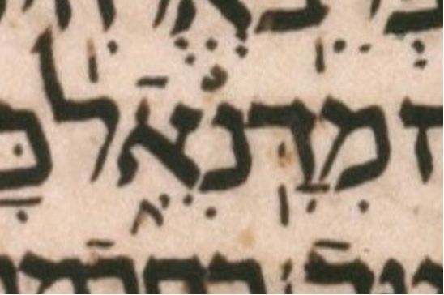

| bcv (link to tanach.us) | ek28:3 |
| MPK | מִדָּֽנִ◌ֵ֑אֿל |
| qere | מִדָּֽנִיֵּ֑אל |
| at issue | יּ |
| at issue English | added a dagesh to yod |
| folio col line | 291A 1 11 |
The MPK has no letter to carry a dagesh for the qere’s yod.
The rafeh on the א makes it clear that the qere’s yod functions as a consonant not a vowel, i.e. the qere’s syllables are מִ דָּֽ נִ יֵּ֑אל.